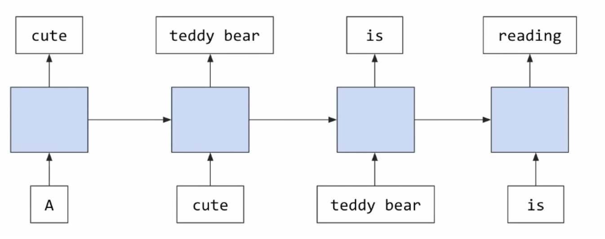
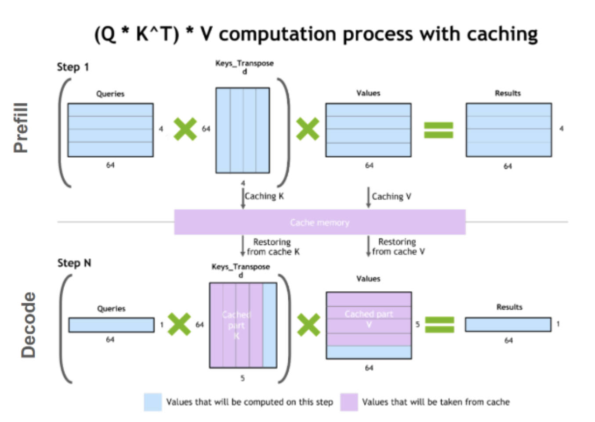

Speedrunning the Transformer
June 25, 2026 · CME295, Lecture 1: The Transformer
During undergraduate college, I loved taking lectures on random courses — probability theory, poker — and I always thought of continuing the habit. But the humdrum of starting up really took me far from that environment I loved being in. Serendipitously, I'm now building in the field of AI, and I'd been postponing CME295 for quite some time. Well, better late than never — let's do a speedrun of the entire course.
Lecture 1: The Transformer
00:00–10:50 · Course logistics
Skippable if you're not taking the course online, but it's fun to see how Stanford structures their logistics. The lecturer emphasized that attending class in person is "essentially a personal choice," and mentioned the recordings serve as material you can watch flexibly, which I think is super good. At my college, attendance was a huge issue, and some very venerable professors would even fail students who didn't meet their expected attendance criteria via the infamous "DX" grade. I personally think this discourages students' attitude towards research, which could be done in those class hours, and by not letting students decide for themselves, the institution treats them as kids — or much worse, prisoners. Very uniquely Indian, I must say. Anyway, let's get back to learning.
10:50–14:15 · Natural Language Processing
NLP stands for Natural Language Processing (:p).
The professor describes NLP as a field that revolves around "manipulating text," and it can be classified into 3 buckets: classification, multi-classification & generation, in increasing order of interest in today's AI landscape.
Briefly, classification deals with sentiment extraction, intent detection, language detection & topic modelling.
- Sentiment extraction is judging a chunk of text as positive, negative or neutral.
- Intent detection is judging the action from the text (the professor's example: "I want to create an alarm for tomorrow" → here the intent is to create an alarm).
- Language detection is judging the language from the text, and this brings an important application in today's speech-to-text models, which natively understand language thanks to the vast amount of data captured in their training runs. But language detection is still useful in multilingual scenarios, especially in voice agents, to make sure the speaker's language is recognised by the model properly.
- Topic detection identifies the main themes or topics within a large chunk of text without reading things manually. (And since it's text, this also applies to audio — and forgive me for being too extrapolatory, but video as well.)
Multiclassification takes text as input and predicts multiple things. Examples are NER (named entity recognition), which labels specific words (location, time, etc.). Then there are some more linguistic tasks (a bit archaic in today's landscape): speech tagging (figuring out nouns, pronouns, etc.), dependency parsing, constituency parsing.
Generation (the most popular one by far) is basically text as input and text as output with variable length. There are sub-fields like Machine Translation, Question Answering (ChatGPT, Gemini, etc.), Summarization and Text Generation. Basically, the trillion-dollar AI industry is this.
14:15–16:45 · Sentiment Extraction in Classification
The usual datasets for this are found on X, Amazon Reviews or IMDB critiques. There are 4 evals to keep in mind: Accuracy, Precision, Recall & F1 score. Accuracy is the % of observations correctly predicted; precision is the % of predicted-positive that were correct; recall is the % of actually-positive that were correct; and F1 score is a function of precision and recall.
There's an interesting nuance here about these 4 evals. Sometimes there are tasks and datasets where classes are very imbalanced (e.g. 99% of the dataset is positively labelled). In these imbalanced datasets, accuracy on its own is a poor judge of quality, because a classifier that predicts everything as positive can win over others but won't be useful in real life. Hence, precision & recall play a big role.
16:45–17:50 · NER (Multiclassification)
This helps identify the category of a given word. The dataset used is the Annotated Reuters Newspaper (CoNLL-2003, CoNLL++). The evals are again accuracy, precision, recall and F1 score. The nuance here is that these metrics are used at a token level or entity-type level rather than an aggregate sentence level.
17:50 · Machine Translation (Generation)
This helps translate text between 2 languages (what EzDubs AI did). The datasets used are found in the Workshop for Machine Translation (WMT datasets). The evals are BLEU, ROUGE & Perplexity. BLEU (BiLingual Evaluation Understudy) helps judge the quality of translated text and is a measure of how well a translation stands with respect to a reference text (similar to precision); ROUGE helps with the quality of text generated (similar to recall); and perplexity quantifies how "surprised" the model is to see some words together.
The problem with BLEU & ROUGE is that you'll always need reference text to judge things. With recent progress in the LLM space, more reference-free metrics have come up, which we'll discuss later in the course.
Note — the timeline of recent LLMs traces back to the 1980s: from RNNs (1980s), to LSTMs (1997), word2vec (2013), transformers (2017) and LLMs (2020).
23:00 · Tokenization
It's basically cutting text into some arbitrary unit of text. This arbitrary unit is called a "token."
The reason we don't do word-level tokenization is that "bear" and "bears," which should be similar, get treated differently. It's simple & interpretable, but has the risk of being OOV (out of vocabulary).
Sub-word tokenizers (WordPiece, BPE) leverage roots of words (-dy, -ing) to counter this problem, but the con is that the sequence gets longer, which increases the complexity of the models, as they depend directly on the number of tokens that need to be processed. Lower risk of OOV.
Character-level tokenizers have a small chance of OOV, but make computations slower and the embeddings are not interpretable. They are also robust to casing and misspellings.
WTF is OOV — at inference time, when we want to make a prediction, the token that needs to be predicted must be in the training set. If at inference time it isn't, it'll be marked as unknown, a.k.a. OOV.
30:40 · Word Representation
The aim is to find a representation for each of these tokens. The naive way is to assign it via OHE (one-hot encoding). But people want to compare these tokens to see which ones are similar, via cosine similarity, by looking at the angles made between these vectors in the n-dimensional space. With OHE, all vectors will be orthogonal to one another, so we need some form of a "learned embedding."
Note — the vocabulary for a modern multimodal LLM could be on the order of 100,000s.
We need to learn these embeddings from data. Here is where word2vec comes in. It shows a very intuitive way of learning these embeddings and making sense of them. It uses 2 approaches: CBOW (Continuous Bag of Words) & Skip-Gram. It's basically used to learn this embedding layer, and is a neural network with a proxy task over billions of words worth of text. CBOW is essentially predicting the target word if you have the words surrounding it, and Skip-Gram is the opposite (target word → words around it). These are the proxy tasks. It's not necessary to predict the next word yet, but rather to learn the meanings of these words in this high-dimensional space, to ensure the model has an understanding of the language. (For example, King & Queen have the same similarity as Husband & Wife.)
Note — epoch → how many times the model sees the training set.
Some nice questions:
- How do you know when generation stops? → Using end-of-sequence tokens, usually.
- What informs the size of the hidden layer? → It's a tradeoff. We want the embedding to be rich enough to be informative for downstream tasks, but for smaller tasks, smaller vectors might be better, as longer vectors imply longer computation.
- How can we distinguish words spelled the same but in different contexts? → Basically what LLMs are.
An important concept captured here: to make this "learned embedding," one uses sample text itself, and from these billions of words the embeddings are learnt. Any new word is basically one-hot encoded, passed onto the hidden layer of this learned embedding, and that is what becomes the "word representation" used.
53:25 · Recurrent Neural Networks
RNNs capture the sequential nature of how text appears in the real world. Instead of processing words all at once, they keep a hidden representation of the sentence so far and consider tokens one at a time. This technique was introduced in the 80s.

Why do we not hear of RNNs these days? They had some pros, but a lot of cons. The meaning of a sentence is only captured in the hidden state, which creates problems with long-range dependencies and impacts the model's ability to remember what it saw in the past.
01:00:05 · LSTMs
Stands for Long Short-Term Memory. In order to predict the next token, we depend on every word appearing before it. In practice, sometimes there can be a vanishing gradient problem.
Note — read about the vanishing gradient problem properly: Wikipedia.
To recap: word2vec is simple yet powerful & has very intuitive embeddings, but word order doesn't count and the embeddings aren't context-aware. RNNs & LSTMs have state-of-the-art results and word order matters, but the vanishing gradient problem is there and computations are relatively slow.
01:05:00 · Attention
The model has trouble remembering things in the past. The translation tasks had a real issue with long-term dependencies, and seq2seq models were unable to remember what the input sentence was saying.
Hence, "attention" was born in 2014 to solve these long-range dependency issues.
01:06:56 · Self-Attention mechanism
Introduced in 2017 in Attention Is All You Need (infamous, haha). It relies on the self-attention mechanism and leads to SOTA results on machine-translation tasks.
The core idea of self-attention is very basic: to infer the context of any token in a sentence, look at all the tokens surrounding it. That's literally it.
Here is where Q, K and V come in — the Query, Key & Value vectors. The Query is compared to the Key, which then takes the corresponding Value.
The efficient computation happens over GPUs and is expressed as softmax(QKT / √dk) · V.

01:14:00 · Transformer Architecture
It's based on an encoder-decoder architecture. The encoder computes meaningful embeddings of your input text, and the self-attention mechanism applies this at the attention layer — all the tokens in the input text attend to one another.
Notes are available for this (not from this lecture, but generally very useful): Google Doc.
Note — position encodings inform the positional information in this transformer architecture to supplement the attention mechanism, since attention is position-agnostic.
01:24:38 · Multi-head attention
The broad idea is to run multiple self-attention layers in parallel. The benefit is obvious, as it enables the model to capture different attention features in parallel. As a comparison, think of the multiple filters of a convolutional layer in CV.
01:25:40 · Label Smoothing (a computation trick)
Overconfidence is bad. Label smoothing intuitively addresses this by saying "predict this word, but it might be that it's not this word," deliberately introducing noise into the true labels.
q(k|x) = δk,y → q′(k|x) = (1 − ε)·δk,y + ε·u(k)
It tends to make the model less sure about its prediction, hence preventing overfitting, and in practice it improves BLEU score for translation tasks and accuracy.
01:27:50 · An end-to-end example
"A cute teddy bear is reading." → convert to French.
Tokens: BOS, A, cute, teddy bear, is, reading, . , EOS.
Convert these into position-aware embeddings. Then pass them through the encoder. Project them into Query/Key/Value space by multiplying by the Query, Key & Value weight matrices to form the Query, Key & Value vectors, and using the self-attention formula, compute the matrix. Finally, there's an FFN at the end of the encoder that makes context-aware encoded embeddings. There are basically N encoder modules (big N in the original paper). These N are now fed to N decoders, and the last representation of the encoder is fed to the cross-attention of each decoder.
Note — the hidden layer usually has a smaller dimension than the input or output, but here it's bigger, because we want the model to have enough degrees of freedom to learn useful representations.
The lecture ended with "Thank you for your attention." Haha.